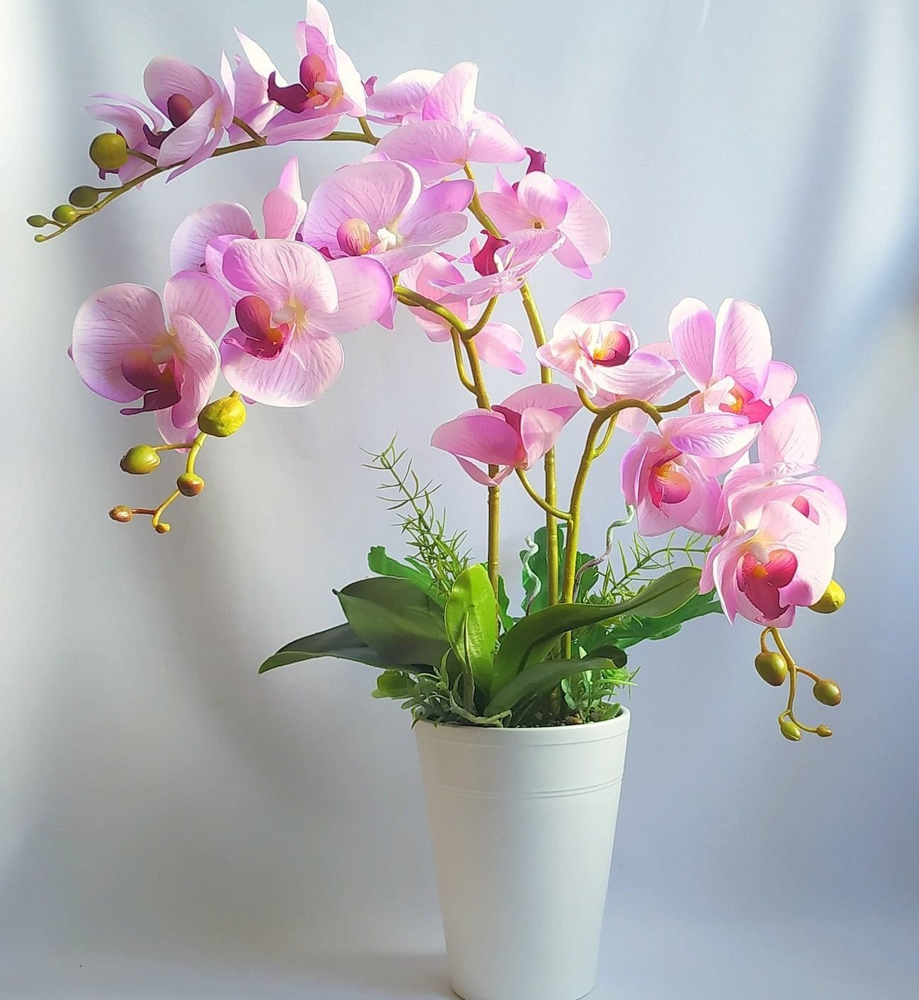

Орхи́дные, также Орхиде́и (лат. Orchidáceae) — крупнейшее семейство однодольных растений.
Орхидеи – многолетние травянистые растения. Они могут расти на других растениях, деревьях, напоминая лианы. Есть некоторые разновидности, произрастающие на грунте или камнях. Размеры надземной части могут значительно колебаться. Есть виды, которые не превышают нескольких сантиметров, другие вырастаю на несколько десятков метров в длину или высоту.
У большей части орхидей есть бульбы и псевдобульбы – особые утолщения побега, в которых происходит откладывание запасов воды и питательных веществ. Благодаря им растение меньше зависит от корневой системы и качественного состава почвы, на которой произрастает.
По этой причине некоторые разновидности вообще имеют только воздушные корни, которые получают влагу из коры деревьев или воздуха.
Листья орхидей – цельные, тонкие, сочные. У некоторых видов они способны запасать влагу наряду с корнями.
Цветы – простые по форме и строению, но со своими особенностями. Для орхидей характерно наличие «колонки» и «губы» на всех цветах. Каждое отдельное растение может формировать как только один цветок, так и целые соцветия, расположенные на протяжении всей длины побега.